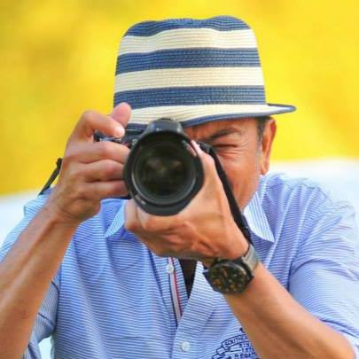

World traveler, manzanilla and manchego lover- Ray Torres has been behind the lens for almost 20 years, capturing perfect moments and bringing them to life through photography.
Born and raised in the Philippines, Rey’s eye for capturing natures beauty is one of his many talents. However, his specializations lie in headshots, landscapes, events and travel photography.
Rey has always had a creative eye as his passion for photography started in his early 20’s. One of the things that makes Rey different from other Vancouver photographers is his exposure to various cultures, colors and backgrounds that he has gained during his travels.
“Some of the most memorable moments are caught behind the lens, it’s being able to see beauty that others may not be looking for”- Rey Torres.
If you have a project in mind, would like your headshot or portrait taken, need a special event, be it a wedding, corporate event, or something personal captured, feel free to get in touch! I’d love to hear from you.